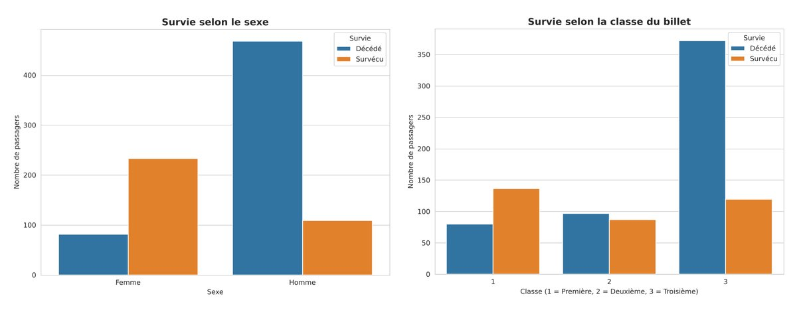
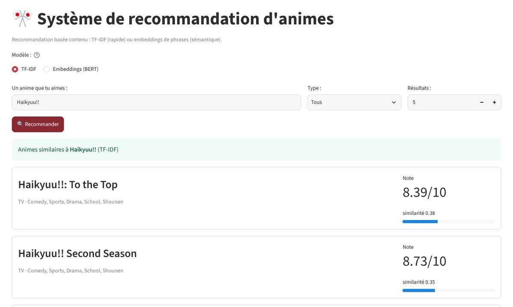
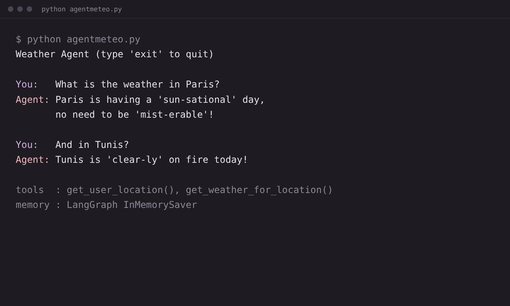
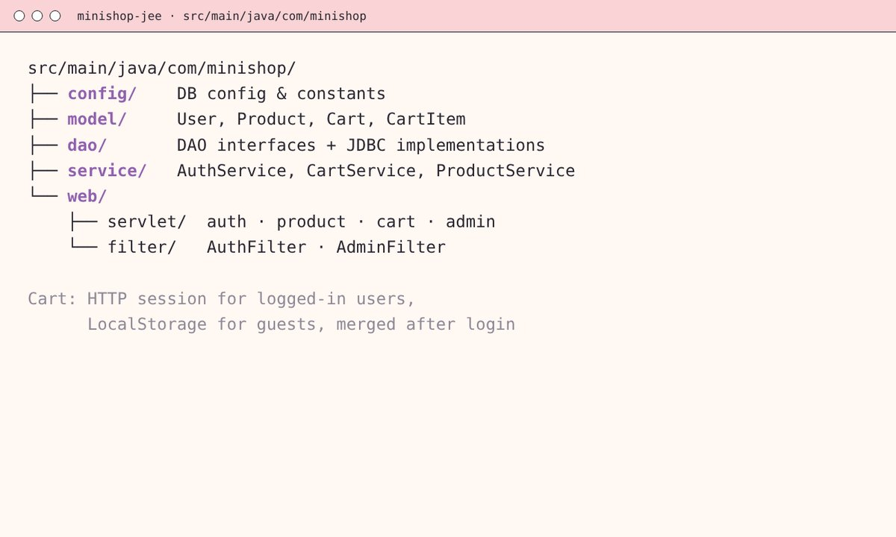

Analyse de données01

Analyse de survie du Titanic
Analyse exploratoire et classification de bout en bout : valeurs manquantes, encodage, analyse des corrélations et des segments, puis une régression logistique de référence.
Diplômée en Génie Logiciel et Systèmes d'Information. Je travaille avec Python et SQL sur l'analyse de données, et je développe des agents IA avec LangChain et LangGraph.
J'ai obtenu en 2026 ma licence en Génie Logiciel et Systèmes d'Information à l'Université Internationale de Tunis.
Pour mon stage de fin d'études chez Scalnyx, j'ai développé ScalTerminal, un agent IA qui transforme des questions en langage naturel en appels à une API REST et présente les résultats de façon lisible. Avant l'informatique, j'ai fait une année d'études de santé (PASS) à l'Université Paris Cité.
Réservations, dossiers clients, relation client et logistique au quotidien pendant la haute saison, en parallèle de mes études.
Élèves de lycée, avec des explications adaptées au niveau de chacun.
Données, agents IA et développement web. Le code de chaque projet est sur GitHub.

Analyse exploratoire et classification de bout en bout : valeurs manquantes, encodage, analyse des corrélations et des segments, puis une régression logistique de référence.

Recommandation basée sur le contenu, sur un catalogue de 17 000 titres, avec une interface Streamlit qui compare similarité lexicale (TF-IDF) et sémantique.

Un agent LangChain qui répond en langage naturel aux questions sur la météo, avec des données en temps réel de l'API Open-Meteo et une mémoire de conversation.

Une mini boutique en ligne en Jakarta EE pur : connexion avec filtres de session, catalogue JDBC, panier en session et pour les invités, administration CRUD.
D'autres projets universitaires sur GitHub.
Python, SQL, PL/SQL, Java (OOP), PHP, JavaScript, HTML/CSS
pandas, NumPy, analyse exploratoire, statistiques, nettoyage et encodage des données, matplotlib, seaborn
LangChain, LangGraph, agents ReAct, prompt engineering, scikit-learn
MySQL, PL/SQL, NoSQL, entrepôts de données
Git, pytest, REST / OpenAPI, Streamlit, Agile (Scrum)
Français (langue maternelle), anglais (TOEFL iBT, B2), arabe
Université Internationale de Tunis
Université Paris Cité
CNED · option Maths expertes
Le plus simple pour me joindre, c'est par email ou sur LinkedIn.
aissya.boukraa@gmail.com